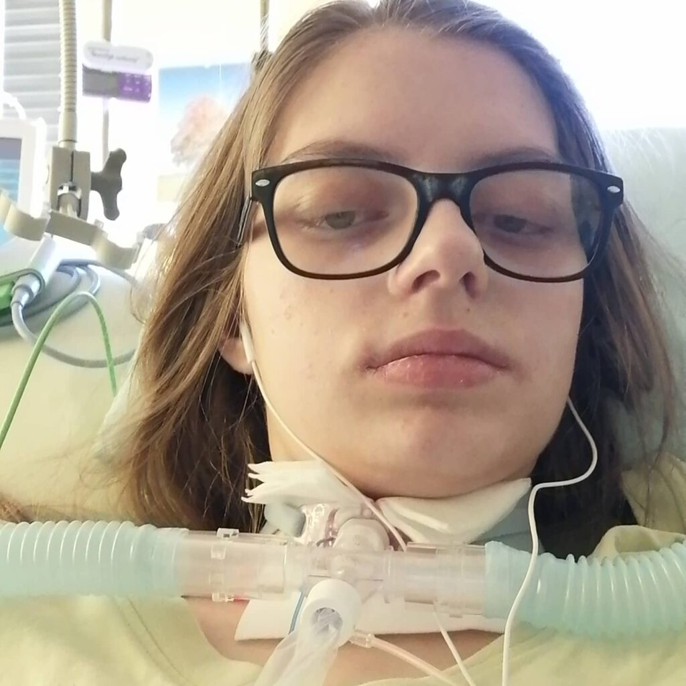

Věnuji se IT a pomáhám lidem s technikou, tvorbou webů a digitální podporou. Život s handicapem mě naučil vytrvalosti, systematičnosti a hledání řešení místo výmluv. Technologie mají lidem usnadňovat život.



Pomáhám bořit bariéry – digitální i ty skutečné.
Moje práce a digitální projekty
- Weby na míru
- HTML,CSS, PYTHON a začínající REACT
- IT podpora pro jednotlivce i malé projekty
- Praktické řešení místo složitosti
- Buduji digitální svět bez bariér
- Kontakt
Můj svět a příběh
- Příběh, který se stále píše
- Blog o životě
- Co mi pomáhá fungovat
- Sdílení zkušenosti
- Možnosti podpory a spolupráce
- Kontakt